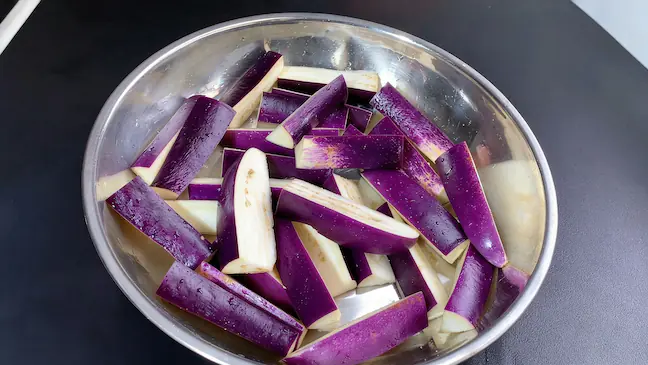
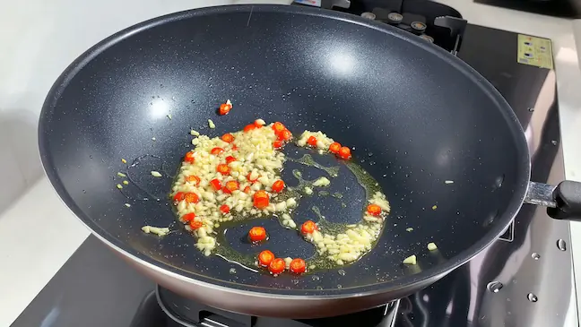
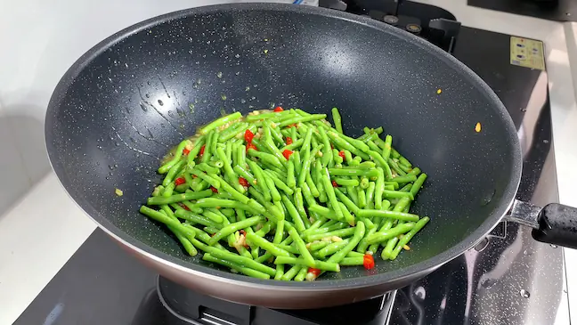

准备食材
茄子、豆角、蒜蓉、辣椒、葱花、油、盐、生抽、蚝油、糖。
- 豆角洗干净、切段；
- 茄子切成条状，冲洗干净，加少量盐腌制出水，15分钟。
烹饪
- 上锅蒸至茄子软化，取出备用；
- 起锅烧油，小火，放入辣椒、蒜蓉炒香；
- 加入豆角，转大火炒1分钟；
- 加少量开水，盐，继续炒豆角1分钟，炒熟、入味；
- 加入蒸熟的茄子，炒匀；
- 调味，加入适量生抽、蚝油、鸡粉、糖，炒匀食材，出锅。



豆角脆嫩、茄子软润，蒜香裹挟鲜汁，点缀红椒提味，清爽不厚重。


